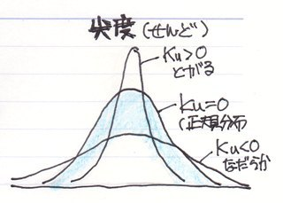

Sample distributionとは？
Sample distributionとはサンプルの分布の事であり、グラフの形とほぼ同じ意味です。
サンプルの分布は右寄りか左寄りか左右均等かの３種類です。これを数学的に測る際、歪度(skewness)という値を求めます。データの分布を見る歳、そのデータが左右どちらに寄っているかにまず注目してみましょう。

サンプルの分布にできる山の傾斜もグラフの形の特徴の一つです。傾斜が高いと中央に密集気味で、傾斜が緩いと散らばり気味です。これを数学的に測るのが尖度(kurtosis)です。